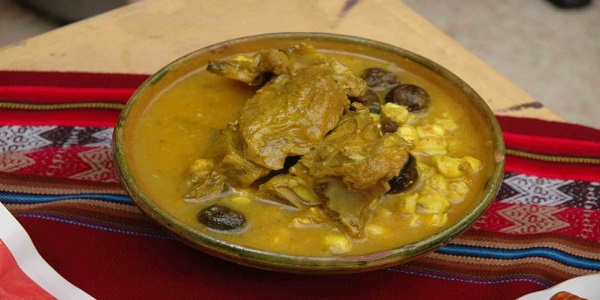

Fricase (Plato Paceño Por Excelencia)
Es un plato tradicional a base de carne de cerdo, maíz blanco y chuño que tiene como condimento al ají amarillo. Se sirve en un plato hondo, con una porción de caldo.
Ingredientes
- Para el Fricase
- 1 Espalda mediana de cerdo tierno (2 Kg.)
- 1/4 Lb Pulpa de cerdo para espesar o
- 2 Cucharas de pan molido
- 1 '/2 Lb chuño remojado y pelado
- 1 Lb Pataska cocida o
- ¾ Lb Maíz pelado no cocido
- 5 colas verdes de cebolla
- Sal
- 6 Vainas de ají amarillo despepitado
- 2 Cucharillas de pimienta entera
- 2 Cucharillas de comino entero
- 5 Dientes de ajo entero
- Sal
- Para el acompañamiento
- 4 panes enteros
- 2 cabezas de lechuga
Preparación
- Una noche antes, remojar el maíz lavado en bastante agua tibia. Al día siguiente, hacer cocer en su misma agua que remojó sin sal; aumentar más agua, si fuera necesario, hasta que termine su cocimiento. Retirar una vez que el maíz se encuentra reventado.
- Despresar la espalda del cerdo por nudos y lavar. En una olla a presión con agua hirviendo y sal al gusto, hacer cocer las presas junto con la pulpa de cerdo, (si eligió) durante treinta minutos.
- Hasta mientras, las vainas de ají lavar y sólo dos pasar por la brasa, luego en un batán o licuadora, todos los condimentos moler de una sola vez.
- Una vez obtenga la salsa espesa del ají, incorporar a la olla de las carnes, después del tiempo transcurrido de cocción. Retirar la pulpa semicocida y moler en licuadora o en moledora eléctrica, luego nuevamente añadir a la olla, para espesar y terminar su cocimiento o utilice el pan molido.
- El chuño pelado, lavar muy bien varias veces hasta que se aclare el agua. Hacer cocer en agua tibia con sal y colas de cebolla.
- Servir en plato hondo las presas y el caldo acompañado de chuño y pataska.